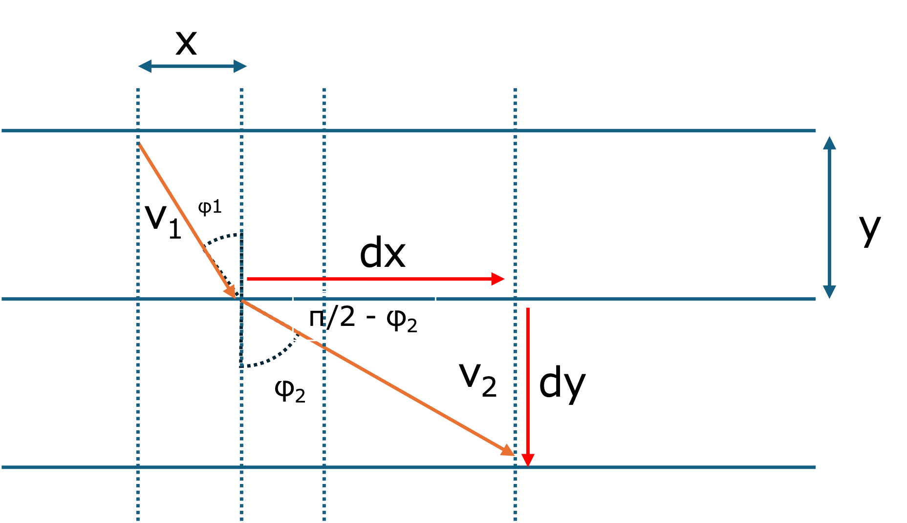

最速降下曲線-03 - θとΦとの関係
・θとΦとの関係
スネルの法則（っぽい）から，Φ，サイクロイド曲線からθ，が登場しました．
では，これら2つの角度？の関係はどうなっているでしょう？
曲線の傾きとφとの関係は，

$$
{ \Large \displaystyle
\begin{equation}
\begin{split}
\frac{dy}{dx} &= tan \ ( \pi/2 - \phi) \\
&= \frac{1}{ tan \ \phi}
\end{split}
\end{equation}
}
$$
となります．
それとは別に，サイクロイド曲線から，
$$
{ \Large \displaystyle
\begin{equation}
\begin{split}
x &= a ( \theta - sin \ \theta)\\
y &= a (1 - cos \ \theta) \\
\frac{dy}{dx} &= \frac{\frac{dy}{d \theta}}{\frac{dx}{d \theta}} \\
\frac{dx}{d \theta} &= a (1 - cos \ \theta)\\
\frac{dy}{d \theta} &= -a \ sin \ \theta \\
\frac{dy}{dx} &= \frac{-a \ sin \ \theta}{a (1 - cos \ \theta)} = -\frac{ sin \ \theta}{1 - cos \ \theta} \\
\end{split}
\end{equation}
}
$$
ニ倍角（半角？）の公式から，
$$
{ \Large \displaystyle
\begin{equation}
\begin{split}
sin \ \theta \cdot sin \ \theta &= \frac{e^{i \theta} - e^{-i \theta}}{2i} \cdot \frac{e^{i \theta} - e^{-i \theta}}{2i} \\
& \frac{e^{2i \theta} -2 + e^{-2i \theta}}{-4} \\
&= \frac{1}{2} ( 1 - cos \ 2 \theta) \\
1 - cos \ \theta &= 2 sin^2 \frac{\theta}{2} \\
sin \ \theta \cdot cos \ \theta &= \frac{e^{i \theta} - e^{-i \theta}}{2i} \cdot \frac{e^{i \theta} + e^{-i \theta}}{2} \\
& \frac{e^{2i \theta} - e^{-2i \theta}}{4i} \\
&= \frac{1}{2} sin \ 2 \theta \\
sin \ \theta &= 2 sin \frac{ \theta}{2} \cdot cos \frac{ \theta}{2}\\
\end{split}
\end{equation}
}
$$
となるので，
$$
{ \Large \displaystyle
\begin{equation}
\begin{split}
\frac{dy}{dx} &= -\frac{ sin \ \theta}{1 - cos \ \theta} \\
&= -\frac{2 sin \frac{ \theta}{2} \cdot cos \frac{ \theta}{2}}{2 sin^2 \frac{\theta}{2} } \\
&= -\frac{ cos \frac{ \theta}{2}}{ sin \frac{\theta}{2} } \\
&= -\frac{1}{tan \frac{\theta}{2} } \\
\end{split}
\end{equation}
}
$$
まとめると，
$$
{ \Large \displaystyle
\begin{equation}
\begin{split}
\frac{1}{tan \ \phi} &= \frac{1}{tan \frac{\theta}{2} } \\
\phi &= \frac{\theta}{2}
\end{split}
\end{equation}
}
$$
となり，Φはθの半分という単純な関係で表すことができます．
次に，サイクロイド曲線の半径，a,について考えていきます．特に最終地点で水平になる場合を考えていきます．